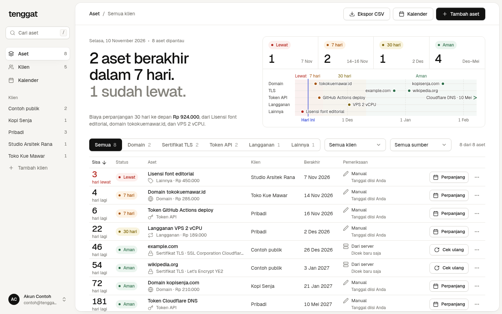
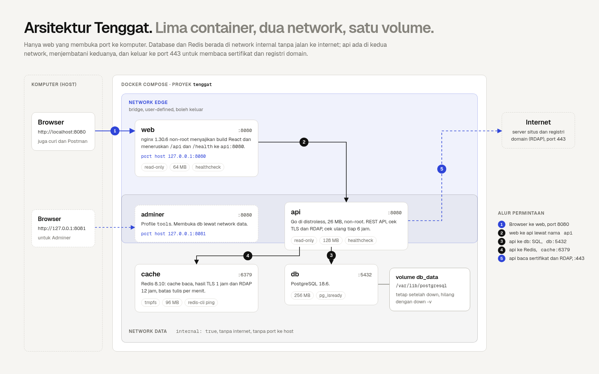
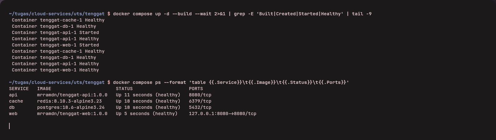

Tenggat: one list for every expiry date, in five containers
A domain renewal email lands in a folder nobody reads, a TLS certificate stops renewing, an API token expires on a Friday night. The dates exist, but they sit in registrar emails, cloud dashboards and notes. I look after my own VPS, domains, API tokens and client websites, so I built Tenggat (Indonesian for "deadline"): one list of expiry dates, read from the source where possible.

What it does
You add a domain, a TLS certificate, an API token or a subscription. For a domain Tenggat asks the registry over RDAP; for a certificate it connects to the host on port 443. Both are re-checked every six hours. Each item gets a status from the days left, and a calendar feed puts reminders on your phone. Every user sees only their own assets, and Tenggat stores only names and dates, never the tokens or passwords it tracks.
Architecture

Five containers run under Docker Compose:
- web: nginx serving the React build and proxying
/api; the only one with a host port (127.0.0.1:8080). - api: Go on distroless; the only one that reaches the internet, for certificates and registry dates.
- db: PostgreSQL 18 on a named volume.
- cache: Redis 8 for cached reads, lookups and rate limits.
- adminer: a database UI behind
--profile tools.
The data network is internal: true, so the database and Redis have no route out and no published port. The API
also sits on edge and reaches its neighbours by service name (db, cache), never by IP.
The Dockerfile
FROM golang:1.27.3-alpine3.24 AS build
WORKDIR /src
ENV CGO_ENABLED=0 GOOS=linux
COPY go.mod go.sum ./
RUN go mod download
COPY . .
RUN go build -trimpath -ldflags="-s -w" -o /out/server ./cmd/server
FROM gcr.io/distroless/static-debian13:nonroot@sha256:25ac8f0c... AS runtime
WORKDIR /app
COPY --from=build /out/server /app/server
EXPOSE 8080
USER nonroot:nonroot
HEALTHCHECK CMD ["/app/server", "healthcheck"]
ENTRYPOINT ["/app/server"]
Dependency files are copied before the source, so code changes do not re-download modules. The build stage is 808 MB; the image that ships is 26 MB, because only the static binary reaches the runtime stage. Distroless has no shell and no version tags, so the binary checks its own health and the base is pinned by digest.
Compose: start in the right order
api:
build: ./api
environment:
PGHOST: db
PGPASSWORD: ${POSTGRES_PASSWORD:?Salin .env.example ke .env}
REDIS_ADDR: cache:6379
depends_on:
db:
condition: service_healthy
cache:
condition: service_healthy
networks: [edge, data]
db:
image: postgres:18.6-alpine3.24
volumes:
- db_data:/var/lib/postgresql
healthcheck:
test: ["CMD-SHELL", "pg_isready -U $$POSTGRES_USER -d $$POSTGRES_DB"]
networks: [data]
condition: service_healthy waits until PostgreSQL accepts connections, not just until its container starts.
${VAR:?message} stops Compose when .env is missing instead of starting a database with an empty password.
Run it
git clone https://github.com/mrramdn/tenggat.git && cd tenggat
cp .env.example .env
docker compose up -d --build
Open http://localhost:8080. docker compose down keeps the data in the tenggat_db_data volume; down -v deletes it.

Redis earns its place
Lookups are cached, so a repeated certificate check dropped from 509 ms to 5 ms. List reads carry an
X-Cache: HIT/MISS header, and every write bumps a version number so stale entries are never served. Writes are
limited to 30 a minute per client; the next one gets 429 with Retry-After.
What I learned
- PostgreSQL 18 moved its data directory to
/var/lib/postgresql; mounting the old.../datapath is a trap. - nginx resolves upstream names once. Docker's DNS (
resolver 127.0.0.11) with a variable upstream lets it find a recreated API container. - Accounts bring Indonesia's personal data law (UU 27/2022): data minimisation, a working "delete account", hashed passwords and a 3×24-hour breach notice.
- User input that triggers network calls is an attack surface. Lookups refuse loopback and private addresses, so they cannot probe the Docker network (SSRF).
The code is on GitHub: github.com/mrramdn/tenggat, and the images are on Docker
Hub (mrramdn/tenggat-api, mrramdn/tenggat-web).